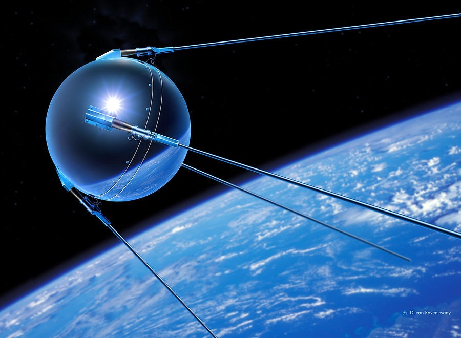
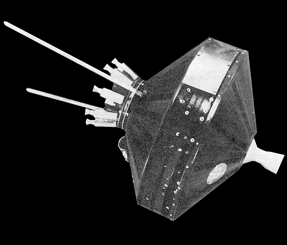
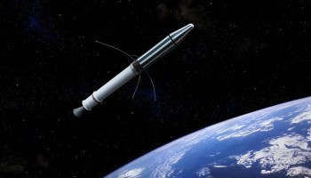
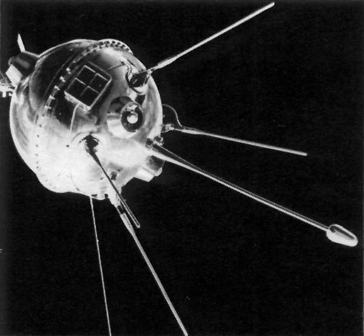
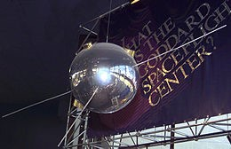
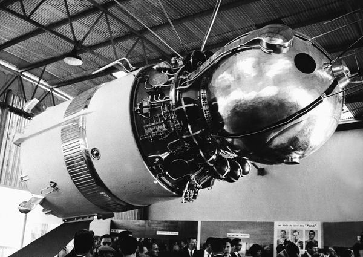
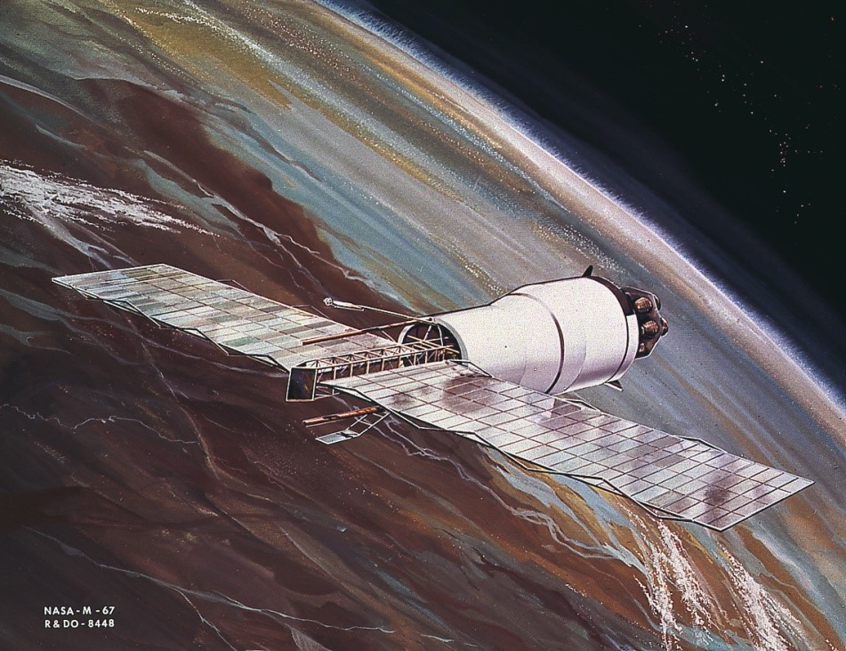

Highlights
1950 - 1970
-

Sputnik 1 was the first artificial Earth satellite. The Soviet Union launched it into an elliptical low Earth orbit on 4 October 1957. It was a 58 cm (23 in) diameter polished metal sphere, with... Read more... -

On October 11, 1958, Pioneer 1 became the first spacecraft launched by NASA, the newly formed space agency of the United States. The flight was the second and most successful of the three Thor-Able space probes.. Read more... -

Explorer 1 was the first satellite of the United States, launched as part of its participation in the International Geophysical Year. The mission followed the first two satellites the previous year; the Soviet Union's... Read more... -

Luna 1, also known as Mechta (Russian: Мечта, lit.: Dream), E-1 No.4 and First Lunar Rover , was the first spacecraft to reach the vicinity of the Earth's Moon, and the first spacecraft to be placed in heliocentric orbit. Intended as an impactor,... Read more... -

TVanguard 2 or Vanguard II is an Earth-orbiting satellite launched February 17, 1959, aboard a Vanguard SLV 4 rocket as part of the United States Navy's Project Vanguard. The success of this launch was an important part of the space race between the United States and the Soviet Union... Read more... -

Vostok 1 was the first spaceflight of the Vostok programme and the first manned spaceflight in history. The Vostok 3KA space capsule was launched from Baikonur Cosmodrome on April 12, 1961, with Soviet cosmonaut Yuri Gagarin aboard,... Read more... -

Pegasus 1 or I, known before launch as Pegasus A, was an American satellite which was launched in 1965 to study micrometeoroid impacts in low Earth orbit. It was the first of three Pegasus satellites to be launched... Read more...